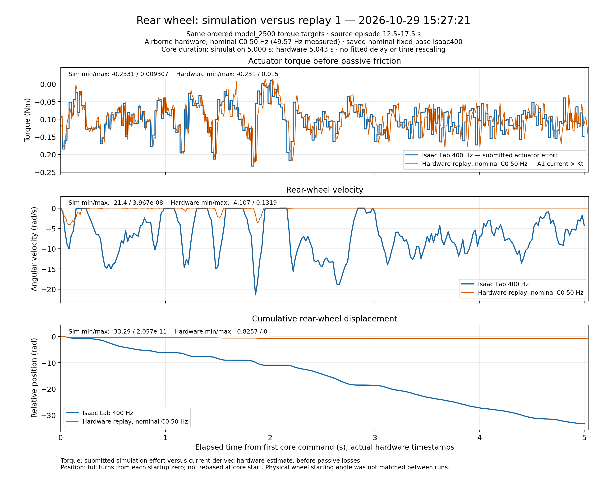
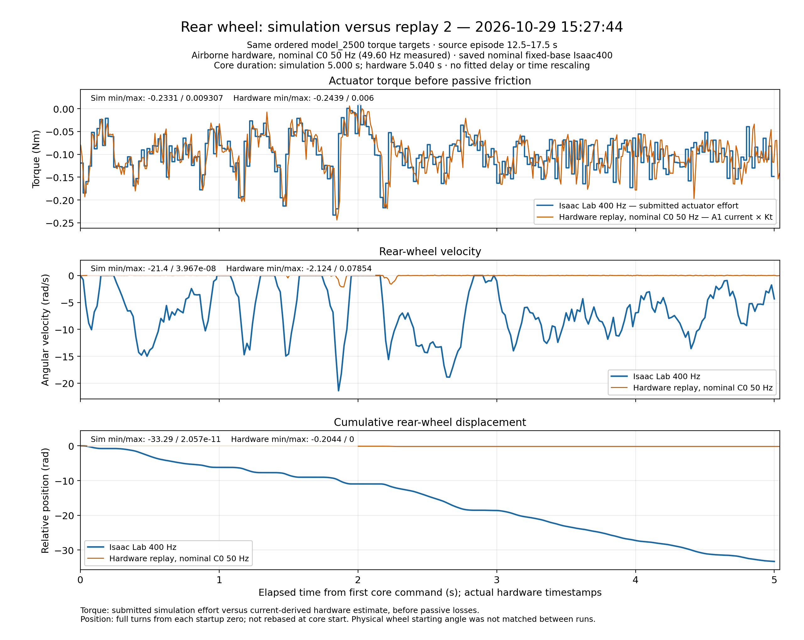
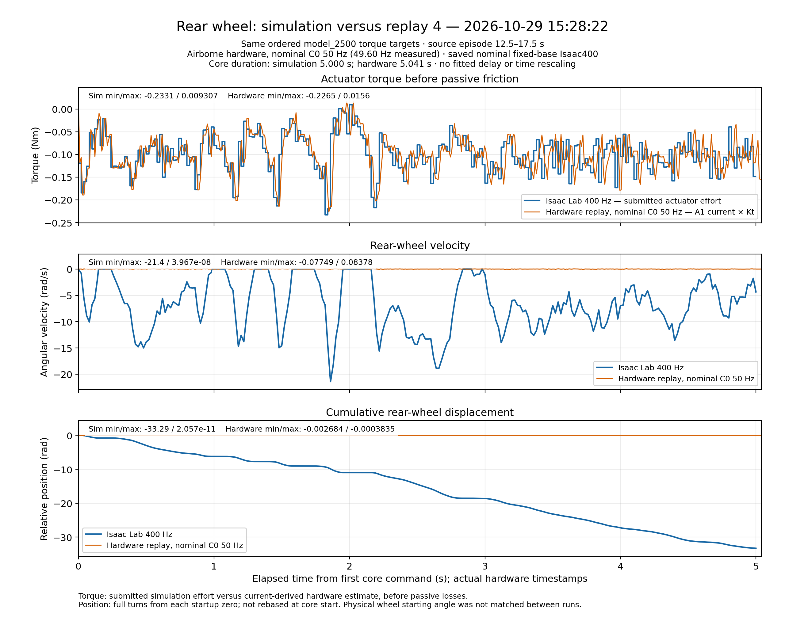
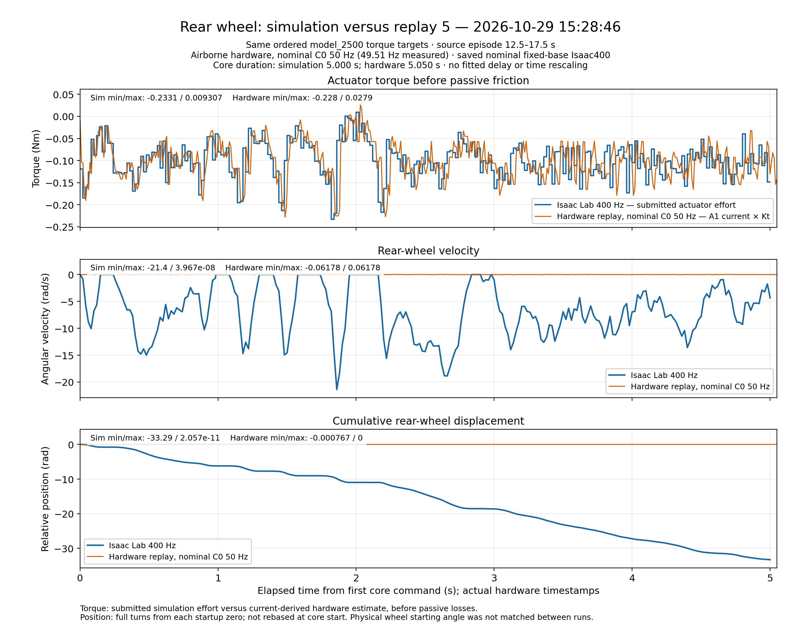
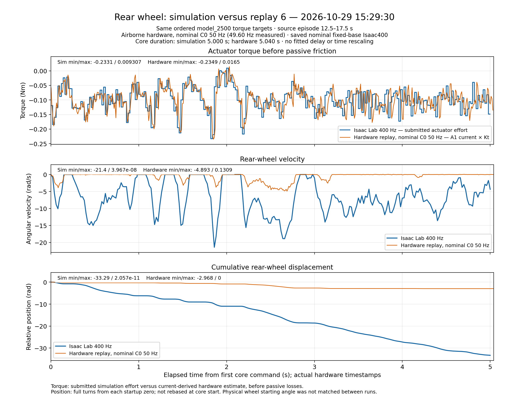
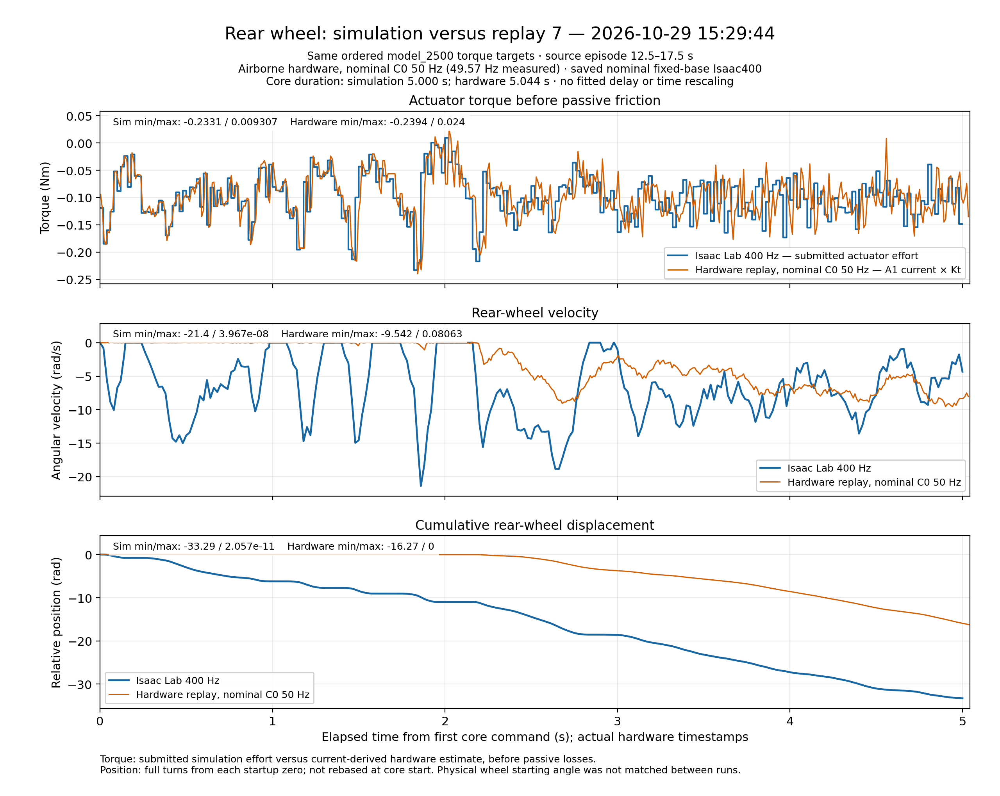

2026-10-29 · all nominal 50 Hz C0 · model_2500 source window 12.5–17.5 s.
Three panels per replay: torque (Nm), velocity (rad/s), multi-turn relative position (rad). Blue: saved nominal fixed-base Isaac400; orange: airborne hardware.
Actual hardware timing is preserved. Each origin is its first core-command send; hardware lasts slightly longer than the simulator’s 5 s. Physical starting wheel angles differed. No fitted delay, smoothing, time rescaling or core-start position reset.
Download all seven as PDF · Methods and summary · Summary CSV · Statistics · Plotted samples





